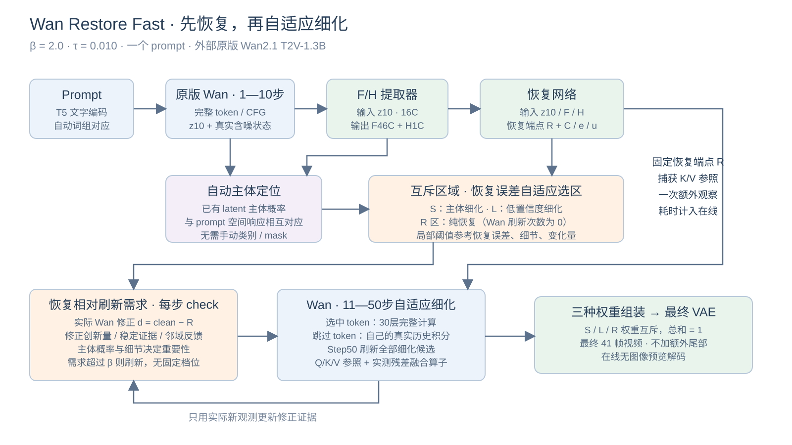
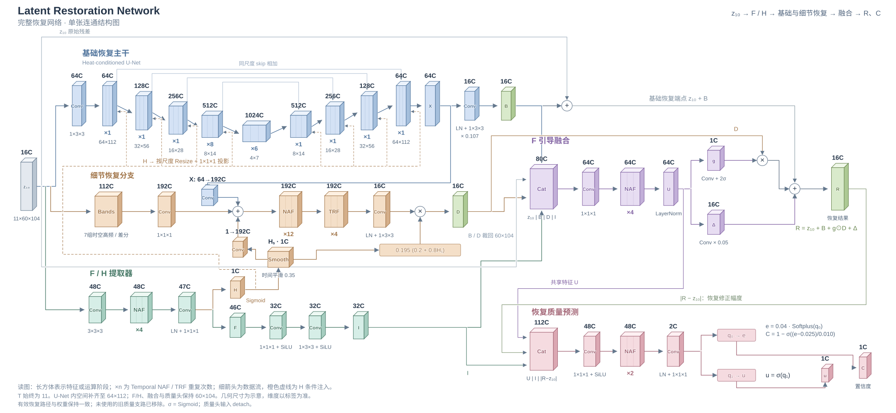

REPRODUCIBLE RELEASE · 2026-09-07
先恢复，再自适应细化
最快版本的独立整理与复测
保留已选 β=2.0 / τ=0.010，清理冗余组件，输入一个 prompt 即可运行。外部 Wan 通过明确接口接入。
2.58×三例总耗时比
28.75s加速版平均在线耗时
0.0545平均 LPIPS-Alex
加速与 GT50 的视觉比较是近似方法的比较；清理版与旧最快版的一致性另行核对。不能将后者理解为与 GT50 无差异。
本次重新测试
A800 80GB · 832×480 · 41帧 · 16fps · 50步 · seed20260828。三个 prompt 预先固定，每例每方法测量一次。LPIPS 在416×240逐帧评估，PSNR/SSIM在保存的视频上计算。这是 VBench prompt 样例复测，不是完整 VBench 总分。
总耗时：最快版 86.26s，GT50 222.67s。在线计时包含文本编码、10步预热、恢复/选区、端点观察、细化、最终 VAE 与视频编码；不含模型装载、指标和报告。模型装载单独实测 15.04s。Triton 缓存可以被前面的回归检查预热。
只传 prompt 的独立 CLI 复核：在线 28.71s；装载模型 12.85s；含装载与产物保存的墙钟时间 41.59s。此项不参与上表加速比。
下载完整数据与测试协议
VBENCH 0157 · SEED 20260828 · 2.34×
A person is riding a bike
human_action · 在线平均刷新覆盖 25.2% · 初始候选覆盖 86.2%
同步联合视频：左为整理后的最快版，右为本次重新生成的原版 GT50。
抽帧检查：首、中、尾帧的构图和动作方向相近；车把、篮筐边缘和衣服褶皱存在局部偏移，后段差异更明显。 完整动态差异请播放视频查看。
查看 Step10、恢复结果、三种区域与最终结果
顺序：Step10 clean → 恢复 R → 互斥选区 → 最终 → GT50。诊断解码只在测试后执行，不计入在线耗时。
粉色 S：主体细化候选；黄色 L：非主体低置信度细化候选；蓝色 R：完全由恢复负责。这是区域归属图，S/L 内并非每步都刷新。
VBENCH 0500 · SEED 20260828 · 2.81×
A beautiful coastal beach in spring, waves lapping on sand, watercolor painting
appearance_style · 在线平均刷新覆盖 14.8% · 初始候选覆盖 92.6%
同步联合视频：左为整理后的最快版，右为本次重新生成的原版 GT50。
抽帧检查：海岸线、配色和整体构图接近；波浪边界、泡沫及水面纹理存在差异。 完整动态差异请播放视频查看。
查看 Step10、恢复结果、三种区域与最终结果
顺序：Step10 clean → 恢复 R → 互斥选区 → 最终 → GT50。诊断解码只在测试后执行，不计入在线耗时。
粉色 S：主体细化候选；黄色 L：非主体低置信度细化候选；蓝色 R：完全由恢复负责。这是区域归属图，S/L 内并非每步都刷新。
VBENCH 0625 · SEED 20260828 · 2.65×
A cute happy Corgi playing in park, sunset, zoom out
temporal_style · 在线平均刷新覆盖 17.5% · 初始候选覆盖 85.3%
同步联合视频：左为整理后的最快版，右为本次重新生成的原版 GT50。
抽帧检查：柯基姿态和镜头构图接近；嘴部、毛发和草地有细小差异。 完整动态差异请播放视频查看。
查看 Step10、恢复结果、三种区域与最终结果
顺序：Step10 clean → 恢复 R → 互斥选区 → 最终 → GT50。诊断解码只在测试后执行，不计入在线耗时。
粉色 S：主体细化候选；黄色 L：非主体低置信度细化候选；蓝色 R：完全由恢复负责。这是区域归属图，S/L 内并非每步都刷新。
整个方法

前10步原版 Wan → latent 中提取 F/H → 恢复 R 与质量预测 → prompt 自动主体定位和互斥 S/L/R → 沿11–50步逐 token 自适应细化 → 归一化组装 → 最终 VAE。
纯恢复区完全不刷新；主体与低置信度区根据真实 Wan 对恢复 R 的修正、新修正的意外量、稳定证据与重要性决定是否刷新。每步做轻量需求判断，不设固定刷新档位。最后一步刷新所有细化候选，不增加尾部步骤。
固定 R 提供端点 K/V 参照，与 Step10 K/V 和最近实测修正共同服务跳过 token。融合算子减少参照构建和残差更新时的中间张量，不再增加额外近似。原版没有预先恢复的 R，因此不能直接使用这一固定端点计算流。
恢复网络：一张完整结构图

F/H 小网络直接接收16通道 z10，输出46通道 F 和1通道 H；H表示细节强度。F与基础/细节残差共同引导 R，质量头同时读取隐藏特征与 |R−z10|，得到 C、误差 e 和风险 u。主体头是另一个已有的轻量 latent 头；线上不运行 YOLO，训练时曾用离线 YOLOE 标签。
保留恢复器72,911,811参数、F/H提取器95,567参数、主体头88,481参数。删除未使用的旧质量头123,073参数，删除未参与生成的第二份 Diffusers DiT；有效权重没有重新训练。
一条命令复现
cd /root/autodl-tmp/wan_restore_fast
./run.sh "A person is riding a bike"
只有 prompt 必填。seed默认20260828，路径自动生成，主体和调度全自动。文件夹内含 README、安装、方法、接口与复现说明；Wan源码/权重保持包外。其他机器按文档一次性准备依赖与外部模型后使用相同入口。
质量请以完整联合视频判断，特别留意细小纹理、轮廓、人物动作和镜头运动；本报告不宣称所有 prompt 无可见差异或稳定达到同一加速比。
来源：官方 Wan2.1 · 官方 VBench prompt 集。没有使用额外训练、在线图像编码器或 GT 辅助生成。